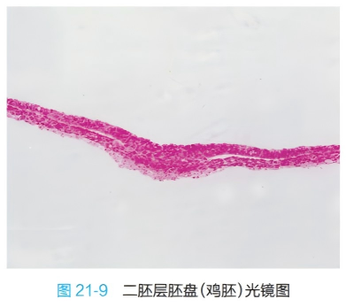
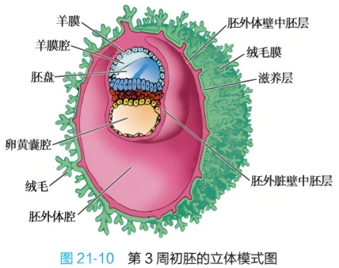
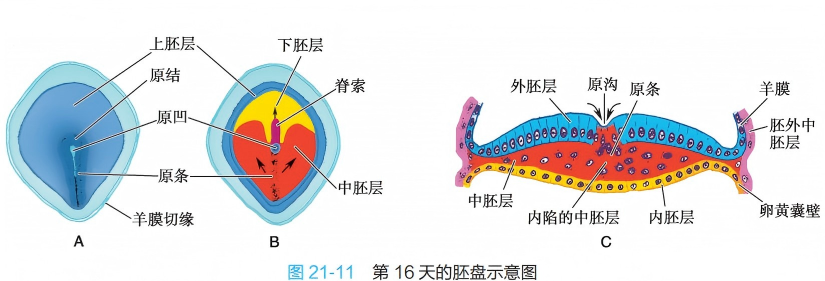
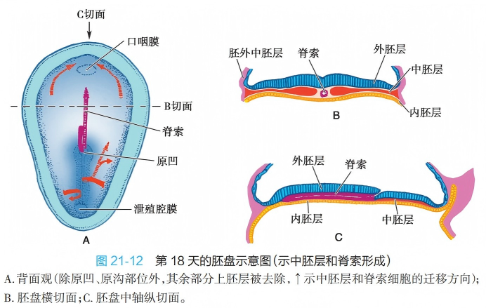
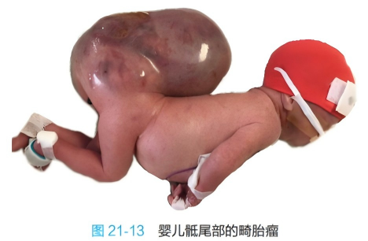

在第2周胚泡植入过程中，内细胞群增殖分化，逐渐形成圆盘状的胚盘（embryonic disc），由两个胚层组成，也称二胚层胚盘。邻近滋养层的一层柱状细胞为上胚层（epiblast），靠近胚泡腔侧的一层立方细胞为下胚层（hypoblast）。两个胚层紧贴，中间隔以基膜。胚盘是人体发生的原基。
由于上胚层细胞增殖，其内出现一个充满液体的小腔隙，称羊膜腔（amniotic cavity），腔内液体为羊水。贴靠细胞滋养层的一层上胚层细胞形状扁平，称成羊膜细胞，它们形成最早的羊膜，并与上胚层的其余部分共同包裹羊膜腔，其所形成的囊称羊膜囊。上胚层构成羊膜囊的底。
下胚层周缘的细胞向腹侧生长延伸，形成由单层扁平上皮细胞围成的另一个囊，即卵黄囊（yolk sac）。下胚层构成卵黄囊的顶。羊膜囊和卵黄囊对胚盘起保护和营养作用。
此时胚泡腔内出现松散分布的星状细胞和细胞外基质，充填于细胞滋养层和卵黄囊、羊膜囊之间，形成胚外中胚层（extraembryonic mesoderm）。继而胚外中胚层细胞间出现腔隙，腔隙逐渐汇合增大，在胚外中胚层内形成一个大腔，称胚外体腔。
随着胚外体腔的扩大，二胚层胚盘和其背腹两侧的羊膜囊、卵黄囊仅由少部分胚外中胚层与滋养层直接相连，这部分胚外中胚层称体蒂（body stalk）。体蒂将发育为脐带的主要成分。

图21-9 二胚层胚盘(鸡胚)光镜图

图21-10 第3周初胚的立体模式图
第3周初，上胚层部分细胞增殖较快，并向胚盘一端中线迁移，在中轴线上聚集形成一条纵行的细胞柱，称原条（primitive streak）。原条的头端略膨大，为原结（primitive node）。继而在原条的中线出现浅沟，原结的中心出现浅凹，分别称原沟（primitive groove）和原凹（primitive pit）。
原沟深部的细胞不断增殖，并在上、下胚层之间向周边扩展迁移：
一部分细胞在上、下两胚层之间形成一个夹层，称胚内中胚层，即中胚层（mesoderm），它在胚盘边缘与胚外中胚层衔接。另一部分细胞进入下胚层，并逐渐全部置换了下胚层的细胞，形成一层新的细胞，称内胚层（endoderm）。在内胚层和中胚层出现之后，原上胚层改称外胚层（ectoderm）。于是在第3周末，三胚层胚盘形成，3个胚层均起源于上胚层。
原条的出现使胚盘有头、尾端之分，原条所在的一端为尾端。由于头端大，尾端小，此时的胚盘呈梨形。从原凹向头端增生迁移的细胞，在内、外胚层之间形成一条单独的中胚层细胞索，称脊索（notochord），它在早期胚胎起一定的支持和诱导作用。
在脊索的头侧和原条的尾侧，各有一个无中胚层的小区，此处内、外胚层相贴，呈薄膜状，分别称口咽膜（oropharyngeal membrane）和泄殖腔膜（cloacal membrane）。
随着胚体发育，脊索向头端生长、延长，原条相对缩短，最终消失。若原条细胞残留，在未来人体骶尾部可增殖分化，形成由多种组织构成的畸胎瘤（teratoma）。

图21-11 第16天的胚盘示意图

图21-12 第18天的胚盘示意图

图21-13 婴儿骶尾部的畸胎瘤